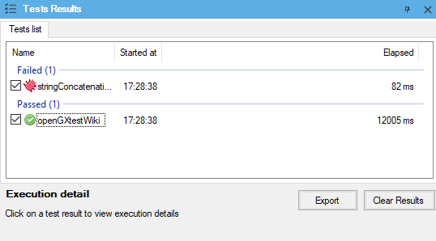
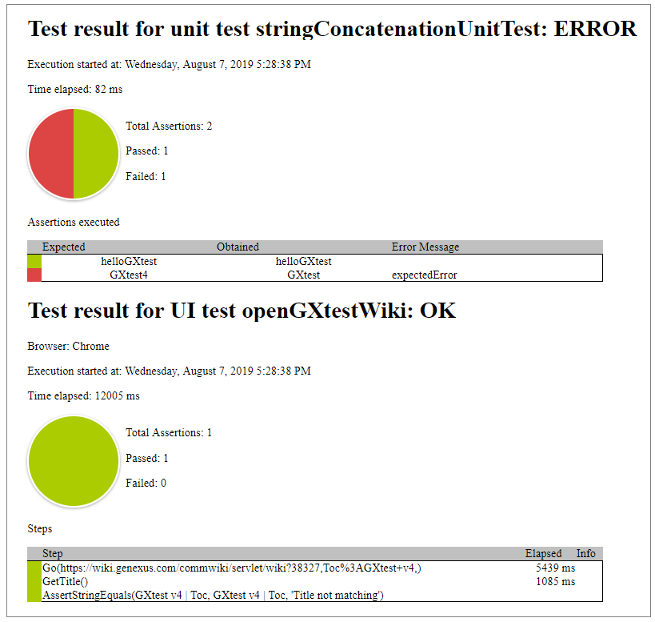

GXtest allows you to export an HTML test case report that shows the test execution results. The test execution information will be easily available to be shared with the rest of the software development team.
After running the tests, you can export the HTML test case report by clicking “Export” button (included in the “Tests Results” window) and selecting the destination path.

Note that only checked tests will be included in exported results. By default, after a test execution, all ran tests are checked.
In the HTML report, you can look at the list of the test results for unit and UI tests. For each test, it shows the test result (OK, WARNING, ERROR or EXCEPTION), the execution date, the time elapsed, a graphic with passed and failed validations and a table with detailed information about assertions and test steps.
In the following image, you can look at an HTML report example of “stringConcatenationUnitTest” unit test and “openGXtestWiki” UI test execution:

Note that when any test validation fails, it will be represented in the pie graphic.
This feature is available since GeneXus 16 upgrade 5.